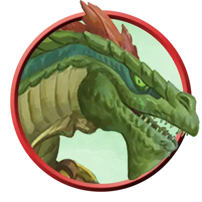

Людоящер-геомант
Lizardfolk Geomancer
Средний Элементаль, Нейтральный

Класс Защиты 13 Инициатива +0 (10)
Хиты 33 (6к8 + 6)
Скорость 30 футов, Плавания 30 футов, Копания 20 футов
| мод | спас | ||
|---|---|---|---|
| СИЛ | 15 | +2 | +2 |
| ЛОВ | 10 | +0 | +0 |
| ТЕЛ | 13 | +1 | +1 |
| мод | спас | ||
|---|---|---|---|
| ИНТ | 10 | +0 | +0 |
| МДР | 15 | +2 | +2 |
| ХАР | 8 | −1 | −1 |
Чувства пассивное Восприятие 14
Языки Драконий, Первичный (Терран)
Опасность 2 (450 опыта; БВ +2)
Действия
Мультиатака. Людоящер совершает две атаки Земляной вспышкой.
Земляная вспышка. Бросок рукопашной или дальнобойной атаки: +4, досягаемость 5 фт. или дистанция 60 фт. Попадание: 9 (2к6 + 2) Дробящего урона.
Град камней (Перезарядка 5–6). Спасбросок Телосложения: Сл 12, каждое существо в Цилиндре радиусом 20 футов и высотой 40 футов с центром в видимой людоящером точке в пределах 60 футов. Провал: 15 (6к4) Дробящего урона, и цель становится Опрокинутой. Успех: Только половина урона.
Сотворение заклинаний. Людоящер сотворяет одно из следующих заклинаний, не нуждаясь в Материальных компонентах (заклинательная характеристика — Мудрость, Сл спасброска заклинаний 12):
Неограниченно: Элементализм
1/день каждое: Поросль шипов, Разговор с растениями, Слияние с камнем
Бонус мастерства +2
Среда обитания Болота, Леса
Сокровища Личные
Людоящеры
Защищающие свои земли рептилии
Людоящеры обитают в дикой местности, наполненной первозданной магией. Хотя большинство людоящеров обладают различными навыками и считаются Гуманоидами, некоторые из них вступают в могущественный союз со Стихийным планом Земли и обретают магическую связь с циклом роста и перерождения.
Людоящеры-геоманты черпают магию из природы и с её помощью защищают свой народ и земли.